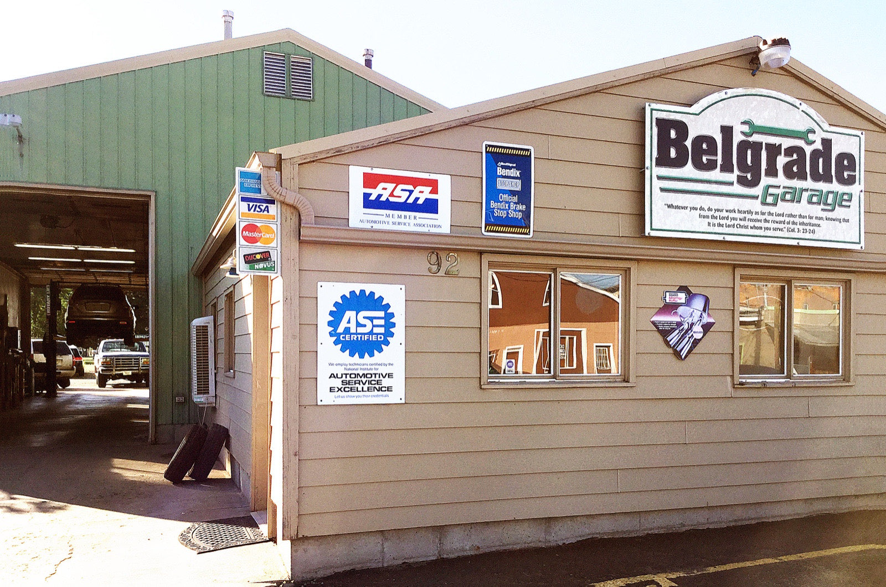
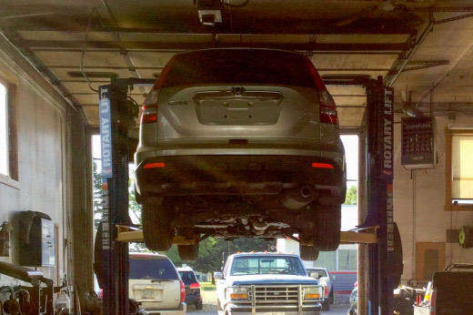
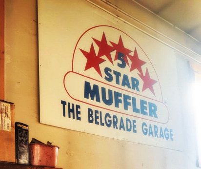
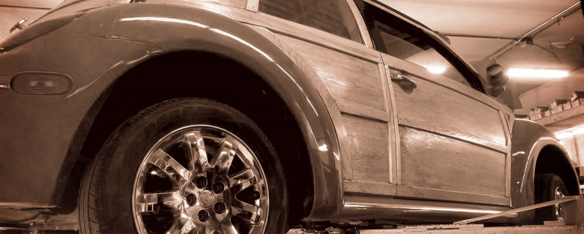

Engine control modules
Electrical problems that come and go are hard to replicate. Bring it in and we start testing right away — ECM diagnosis and programming for the Gallatin Valley.
Read moreDowntown Belgrade · Gallatin Valley
Belgrade Garage has been fixing cars and trucks on N Kennedy Street since 1989. Brakes, steering and suspension, transmissions, differentials, motor replacements and engine control module programming — and everything we do, explained to you.

How we serve you
We believe in the most affordable and thorough car care, whatever the size of the job — from a squeaky brake to a full motor replacement.
Electrical problems that come and go are hard to replicate. Bring it in and we start testing right away — ECM diagnosis and programming for the Gallatin Valley.
Read moreSqueaking, grinding, shaking or pulling to one side when you brake? We give you a fair assessment so you can stop safely in any Montana weather.
Read moreHolding the wheel straight, or a lurch and creak over every pothole? Older cars on original shocks and struts often need them replaced.
Read moreAutomatic, manual and CVT. Hesitation, vibration, an O/D light, burning smells or leaks — come by, and we’ll talk you through it with full transparency.
Read moreA strange noise from the axle can be the first warning. Fixing a differential early protects your axle, driveshaft and transmission.
Read moreIt sounds like open-heart surgery, but a new motor can give your car a second life — and is sometimes cheaper than buying another car.
Read moreGood to know: we handle auto repair of all kinds, including minor body repair — but not tire services.



Inside the shop on N Kennedy Street.
About Belgrade Garage
We’ve served Belgrade and the Gallatin Valley since 1989. Paul and Zane and the rest of the Belgrade Garage team believe in quality work and customer service first.
“Our team is committed to being your best option for Belgrade auto repair.”— the Belgrade Garage team
Invested in our community
We work with these local organizations to provide used vehicles, as well as free and low-cost car repair to those in need in our community.
You asked. We answered.
We like to be transparent about what we do, whether it’s major or minor work on your car.
Many cars come with a light that turns on when the car needs oil. The problem is, these indicators are not always accurate. As a standard, we recommend an oil change every 3,000 miles — it helps you avoid bigger problems down the road.
We don’t specialize in body work. If you’re in a wreck with cosmetic damage, we’ll do our best to find parts that match your car’s body to get you back on the road safely — and we’re happy to refer you to trusted neighbors who do body work.
Common signs: the check engine light comes on, the engine stalls or misfires, the engine isn’t performing well, or the car won’t start at all. Bring it in and our team will run diagnostics to find out what’s wrong.
Besides ECM work, we’re experts in differential repair and replacement, transmission repair and replacement, brake repair, and alignment and suspension repair. Call us with specific questions — we’re happy to help.
Take us for a spin
Schedule an appointment, ask about our services or send a general question. The quickest way to reach us is a phone call.
Phone(406) 388-1842
Location92 N Kennedy St, Belgrade, MT 59714
Open in Google Maps
HoursMonday – Friday · 7:30 am – 5:00 pm
| Monday – Friday | 7:30 am – 5:00 pm |
| Saturday | Closed |
| Sunday | Closed |